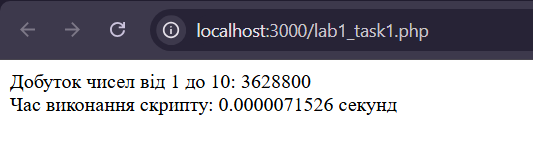
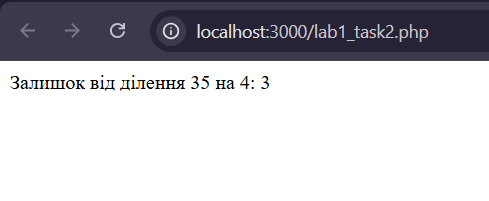

Налаштування середовища PHP розробки
Виконав: Горецький Максим
Група: KNms1-b23
Дата виконання: 17.03.2025
Номер варіанту: 5
Завдання
- Розрахунок часу виконання коду для обчислення добутку чисел від 1 до 10.
Посилання на код: task1.php
- Виведення залишку від ділення числа 35 на 4.
Посилання на код: task2.php
Скріншоти виконання скриптів
Завдання 1

Завдання 1

Додаткові налаштування
Для запуску скриптів необхідно:
- Встановити OpenServer
- Налаштувати PHP 8.0
- Використовувати браузер для перегляду результатів